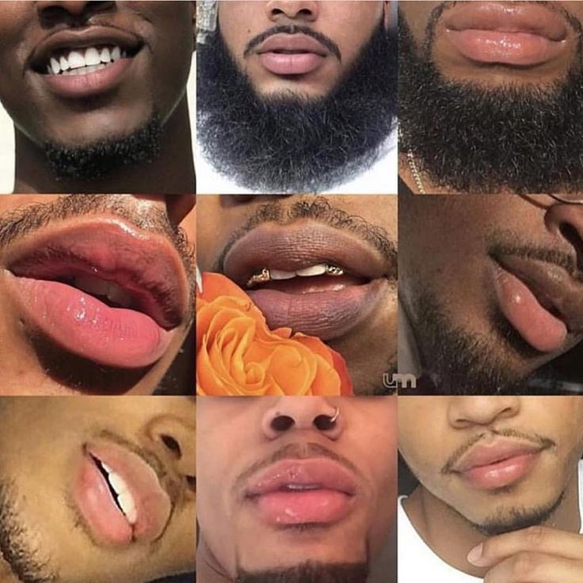

HTML tutorial
CSS tutorial
@wizwagpinklipbalm
lets make your lips Glow!
What does it mean to have a pink lips
A rosy pink lips indicate a healthy body with a balanced mind. This means that you are doing everything right to keep your body fit and the diet and fitness regime you are following suits your body well;
Why must you use wizwagpinklipbalm:Our product provides your lips with a pinkish tint to your lips, which makes it give off an elegant and natural look. This product restores the natural pinkish color to your lips. It contains no chemicals or harmful ingredients and it works in just a few days. Also, it is made of ingredients that exfoliate, cleanse, and revive your lip cells.
About Us photo Google Email Us